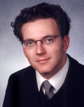

<div class="container">
    <div class="row">
        <div class="col-md-4">

            <h3>
                coalesenses GmbH
            </h3>

            <p>
                Coalesenses is a young company providing <a href="http://www.coalesenses.com/index.php?page=solutions">solutions</a> for massively distributed systems with a focus on wireless sensor networks (WSNs).
            </p>

            <p>
                Wireless sensor networks consist of so called sensor nodes. They are tiny battery powered computers equipped with sensors and a wireless communication interface. Deployed in large numbers at places of interest, they form an ad hoc network and allow for a new perspective: taking the lab outside. Instead of taking the phenomenon into a laboratory with observation equipment, sensor networks observe it in situ. It is a shift in paradigm from a small number of solitary observers to observation quality through simple but highly redundant, cooperating sensors.
            </p>

            <p>
                Coalesenses originates from a university background in this new application area and holds on to the concept of cooperation with public research facilities. Hence we have state-of-the-art research knowledge at our command. We employ PhDs, engineers and students to incorporate latest research results into your projects.
            </p>

        </div>
        <div class="col-md-2">
            
        </div>
        <div class="col-md-2">
            <a href="http://www.coalesenses.com/">Dr.-Ing. Carsten Buschmann</a><br/>
            Coalesenses GmbH<br/>
            <a href="mailto:info@coalesenses.de">info@coalesenses.de</a><br/>
            Maria-Goeppert-Str. 1<br/>
            23562 Lübeck, Schleswig-Holstein, Germany<br/>
            +49 151 10741396<br/>
        </div>
    </div>
</div>